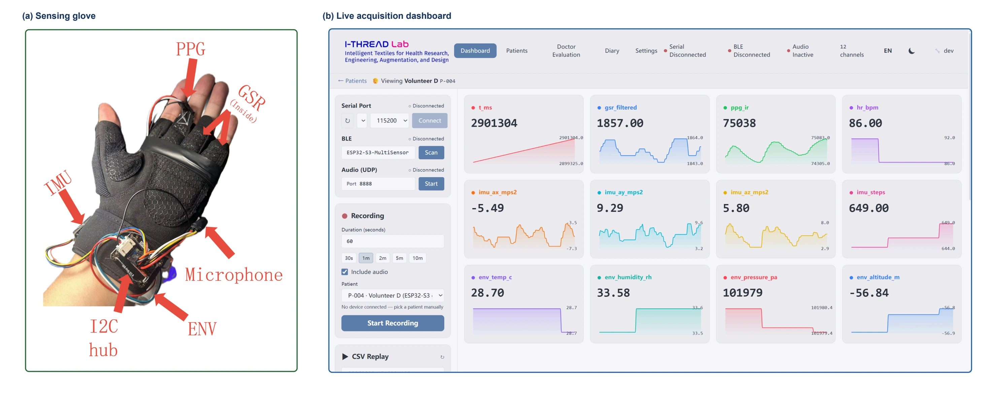
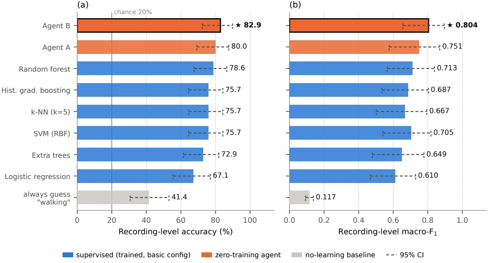
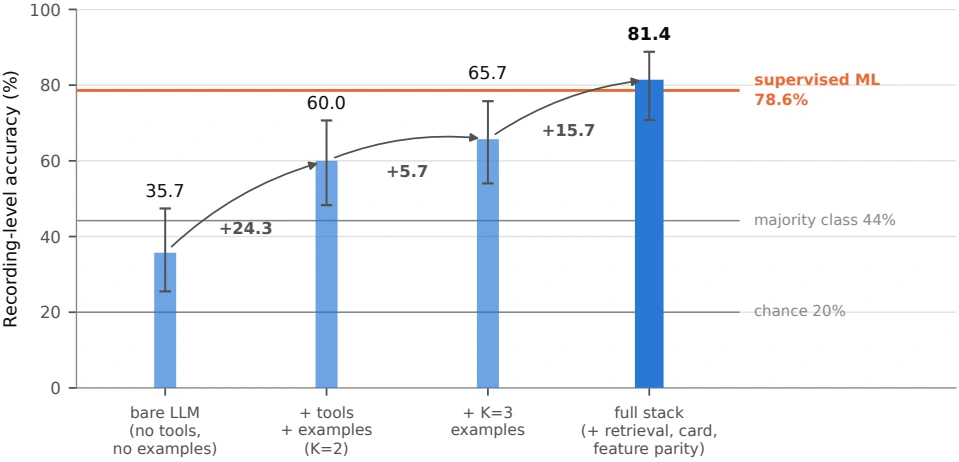
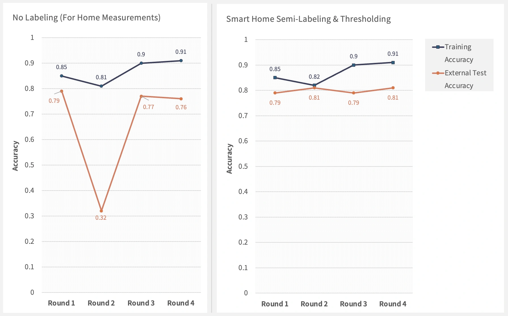
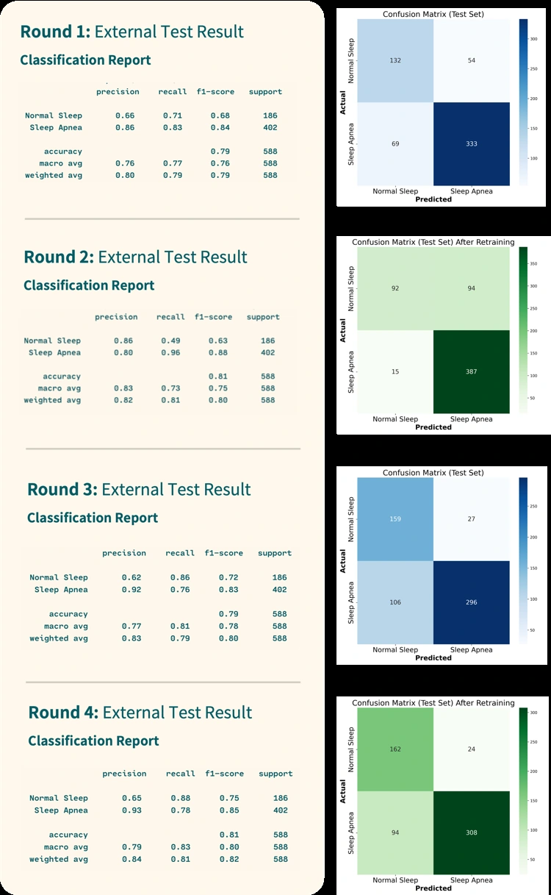
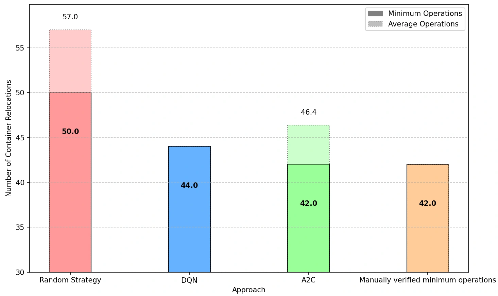
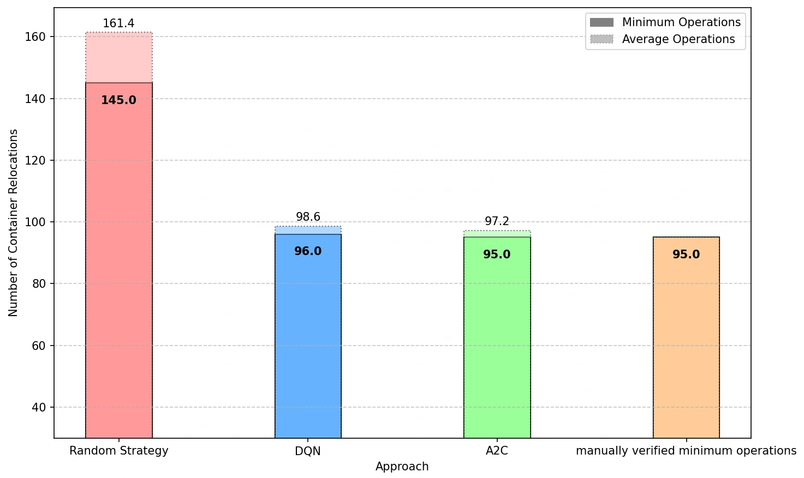
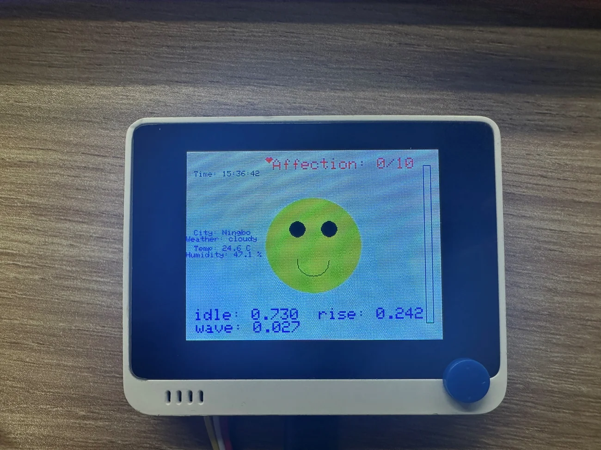
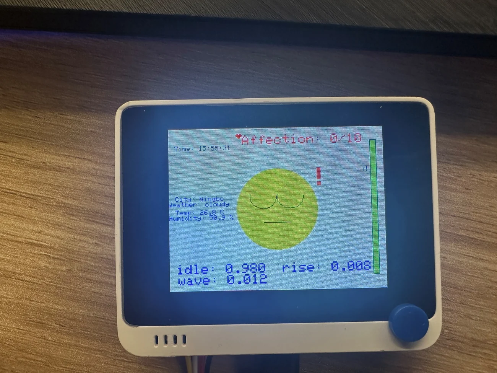
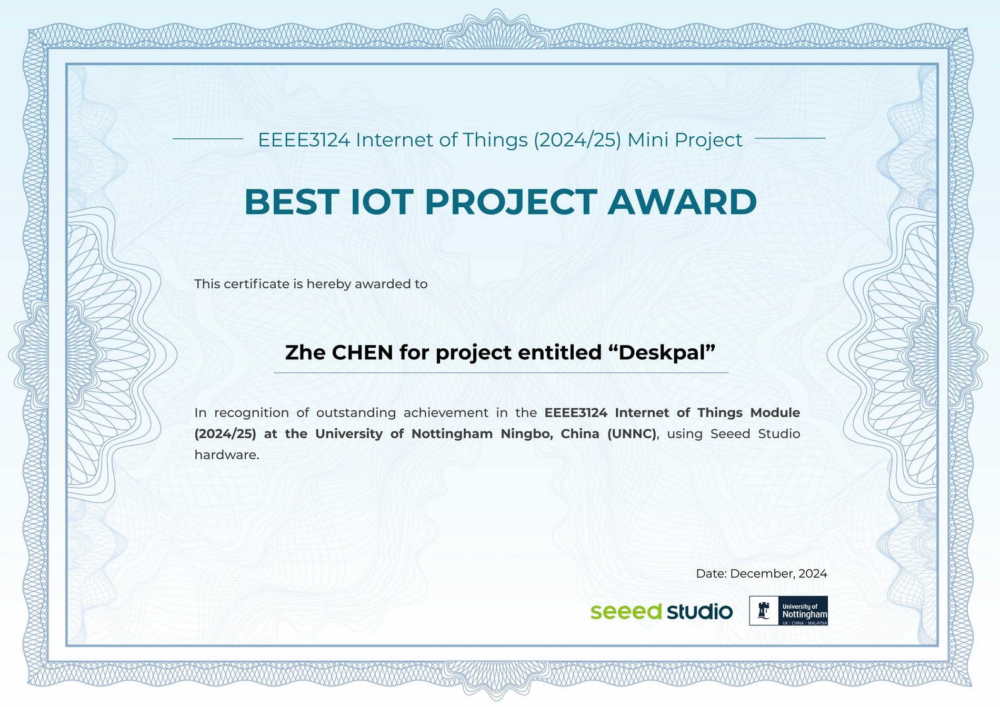

Imperial College London
Hamlyn Centre · I-thread Lab
Research Assistant (RA)
AD-related research: wearable sensing and auditable AI-agent analysis; supporting work on speech-metric checks and report interfaces.MEDICAL ROBOTICS & AI RESEARCH
Connecting human signals
with auditable AI.
I am a Research Assistant at Imperial College London, working at the Hamlyn Centre's I-thread Lab on Alzheimer's disease (AD)-related projects in wearable sensing and AI agents, with supporting contributions to speech-metric checks and report interfaces. I also recently completed my MRes research in medical robotics at Imperial.
I am interested in making intelligent systems more useful, interpretable and grounded in evidence.
01 / RESEARCH PROJECTS
Open a project to see what I built,
how I evaluated it, and what I learned.
How can wearable measurements become useful analytical context without losing their timing, quality or provenance?

Longitudinal monitoring brings together heterogeneous signals, missing measurements and uncertain interpretations. In the context of Alzheimer's disease research, I investigated an engineering pathway from wearable acquisition to bounded, auditable agent-assisted analysis.
I developed the wearable sensing, data platform, agent framework and evaluation. The platform integrates ESP32-S3 PPG, GSR, IMU and audio channels; deterministic tools, retrieval, memory and bounded workflows turn stored recordings into structured reports with recoverable evidence and execution traces.
All analysers received the same 18 record-level features and missingness information. Leave-one-subject-out (LOSO) evaluation covered five movement classes, keeping the held-out participant out of training and retrieval examples.

In a separate fixed-model ablation, the complete tool-and-evidence configuration improved accuracy from 35.7% to 81.4% (p = 0.0007), while parsing failures fell from 15 to 0.

MRes thesis · September 2026
From Wearable Signals to Auditable Interpretation: A Multimodal Agent Platform for Longitudinal Monitoring in the Context of Alzheimer's Disease
Supporting a collaborative speech-research project through metric checks and report-interface work.
At Imperial College London's Hamlyn Centre / I-thread Lab, I contributed to specific supporting tasks within the speech project:
Can home heart-rate data contribute to collaborative modelling when expert labels are unavailable?
At the UNNC Smart Medicine Laboratory, I configured FATE/PyTorch experiments and ran confidence-thresholded pseudo-labelling across four federated training rounds for sleep-apnoea research.
The comparison tested pseudo-labels against a control that treated home samples as normal. The MQTT sensing prototype is presented separately as an Open Day demonstration.
Fourth round · external test set · +5 percentage points

The final sleep-apnoea class precision / recall were 0.93 / 0.78. Overall external-test accuracy reached 81%. The experiment supports using unlabelled home data to improve the tested collaborative model.
I contributed to drafting a collaborative manuscript and am listed as a co-author. The findings provide experimental evidence for modelling with home data that lack expert annotations.

Advancing Smart Communities: redefining the health clouds in Web 3.0
Figures reproduced from the original manuscript.
Can reinforcement learning improve relocation decisions in a simulated container yard?
I built a three-dimensional container-yard simulator, designed state representations and reward functions, and implemented A2C/DQN training and evaluation pipelines. A 3D CNN encodes the yard layout, while the visual simulator makes moves and invalid actions inspectable.
I evaluated each model over 50 deployment runs per scenario. Against a random-action baseline, DQN reduced rehandles by approximately 23% in the simpler yard (44.0 versus 57.0 average operations). In the more complex yard, A2C reduced operations by approximately 40% (97.2 versus 161.4).


The results demonstrate scope for learning-based scheduling improvements in the tested settings, while also exposing a generalisation gap: the Area 2 DQN policy performed worse than random when moved to Area 1, whereas A2C transferred more robustly in this test. This made cross-scenario evaluation an important part of the project, not just training-curve inspection.
University of Nottingham Ningbo China · BEng (Hons) Electrical and Electronic Engineering
Figures 16-1 and 17-1 are taken directly from the dissertation source; their results were checked against the final PDF.
02 / ENGINEERING & DEMONSTRATIONS
Embedded AI, edge vision and robotics.
Working prototypes, awards and public demonstrations.
An embedded companion that turns sensor readings into small, tangible interactions.
I designed and built DeskPal, a desktop virtual pet on a Seeed Wio Terminal. The prototype combines accelerometer-based classification, temperature and humidity sensing, a light sensor and an LCD interface to respond to movement and the surrounding environment.
I trained an Edge Impulse MLP classifier for three device-motion classes: idle, rise and wave, deployed inference on the device, and connected its predictions to an expression and reward state machine. Bidirectional MQTT messaging carries environmental readings, reminders and user-supplied weather information between the device and a phone or computer.


The demonstrable outcome is a complete sensing → on-device inference → interactive feedback → MQTT notification loop. DeskPal received the Best IoT Project Award for the EEEE3124 Internet of Things mini project at UNNC, with the certificate dated December 2024.

Bringing a sports-camera computer-vision pipeline onto a small edge device.
As part of a UNNC summer undergraduate research team, I worked on sports-camera video processing with an NVIDIA Jetson Nano. The project combined camera input, panoramic image stitching, object detection and video streaming for viewing a wider sports scene.
I worked on YOLOv5 fine-tuning and edge deployment, OpenCV-based processing, and ORB feature matching with homography estimation for panoramic stitching. This connected model development with practical camera and embedded-device constraints.
Hands-on experience connecting computer vision to a physical capture pipeline: preparing image data, matching overlapping views, and bringing detection onto an edge platform rather than working only with offline datasets.
Sports Camera Streaming Using an NVIDIA Jetson Nano
University of Nottingham Ningbo China
Making smart-home sensor data visible, connected and ready for further analysis.
At the UNNC Smart Medicine Laboratory, I led a smart-home IoT prototype that connected M5Stack components, an ESP32 gateway and Bluetooth sensor acquisition. Sensor readings were transmitted as JSON through MQTT to an Ubuntu host for monitoring and downstream analysis.
The task was to make the full device-to-host chain work together: collect measurements, structure messages, and connect the sensing hardware to the receiving environment.
The working prototype was exhibited at a university Open Day, making the sensing and communication workflow accessible to visitors. This was a hands-on laboratory demonstration, separate from the federated-learning manuscript and its model-evaluation results.
Smart Medicine Laboratory · Engineering prototype
Connecting visual perception to a real robot's physical task.
In a summer 2024 robotics project, I worked with a Unitree Go2 quadruped, a depth camera and a robotic arm on a waste-detection and sorting prototype. The task connected visual detection and target localisation with grasping and placement into the corresponding bin.
The project gave me hands-on exposure to Ubuntu, ROS and computer-vision integration in a physical robotics setting, complementing my work with robot kinematics and simulation.
The robot prototype was exhibited at a university Open Day.
Physical robot demonstration
03 / BACKGROUND
My work spans electrical engineering, medical robotics and AI systems, from collecting real-world signals to evaluating how a model uses them.
Python · PyTorch · Agent evaluation · RAG
Federated learning · Reinforcement learning
ESP32 · CoppeliaSim · Robot kinematics
Ubuntu · ROS · OpenCV · Jetson Nano
Research Assistant (RA)
AD-related research: wearable sensing and auditable AI-agent analysis; supporting work on speech-metric checks and report interfaces.MRes · Medical Robotics
MRes research completed; formal degree award pending.BEng (Hons) · Electrical and Electronic Engineering
First-Class HonoursResearch Intern / Project Lead
Smart-home IoT & federated learning04 / OPEN-SOURCE TOOLS
A small desktop supervision tool for displaying agent activity, approving actions and stopping execution. Built with AI-assisted development to support human oversight of coding agents.
Explore the repositoryA precursor to the larger wearable platform: ESP32 audio capture and transmission, Whisper speech-to-text, and basic pause and speech-rate statistics. The tool establishes a practical acquisition and transcription path for subsequent research.
Explore the repositoryLET'S CONNECT
I welcome conversations about multimodal sensing, AI agents and research opportunities.